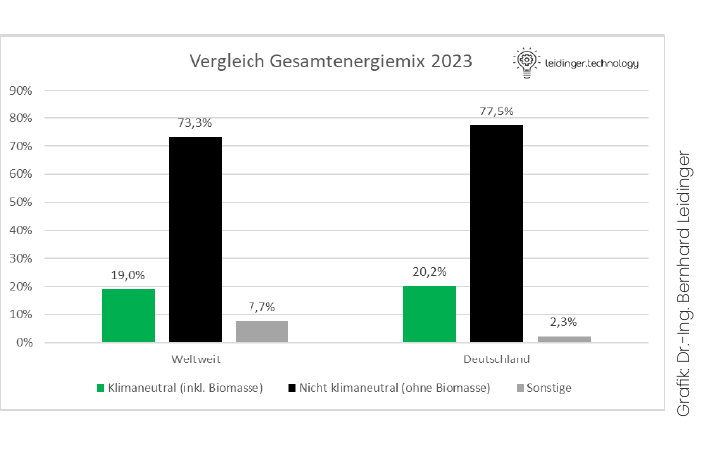
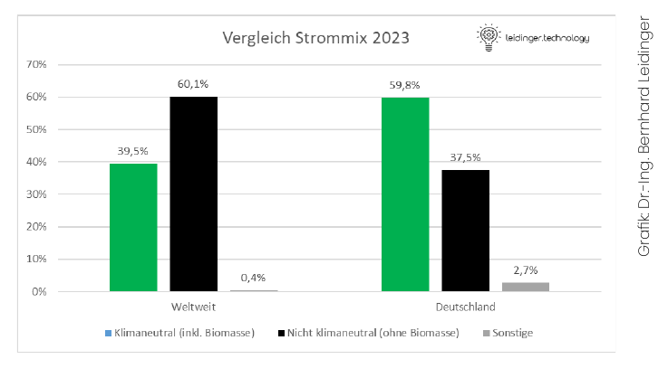
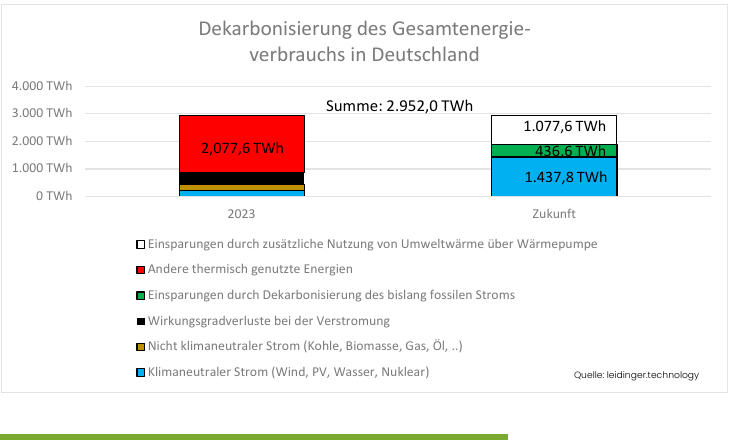
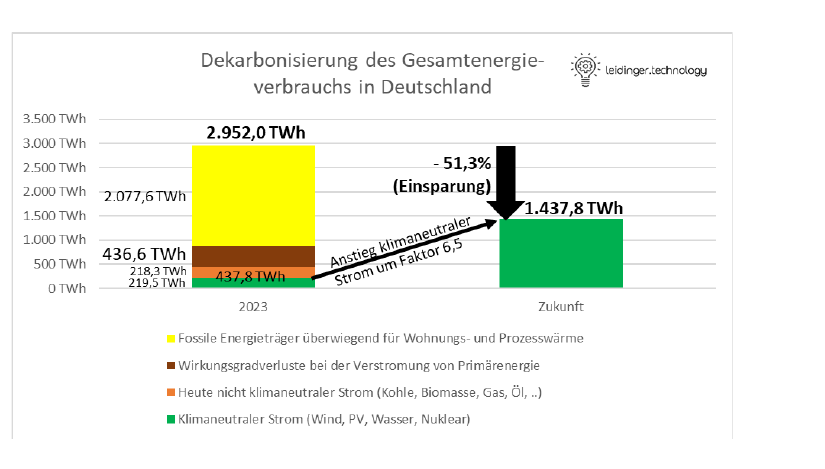

Eine Energiebilanz ist eine systematische Gegenüberstellung von Energiezufuhr und Energieabgabe innerhalb eines bestimmten Systems. Sie dient dazu, den Energiefluss zu analysieren und zu bewerten. Zahlen, Daten und Fakten liefert Dr.-Ing. Bernhard Leidinger in seinem Beitrag. Leidinger befasst sich seit vielen Jahren mit der nuklearen, fossilen und regenerativen Energieversorgung.
Der Gesamtenergieverbrauch
Wir benötigen Energie in Form von Wärme und Kraft zum Leben.
Wärme wird nicht nur für die Beheizung der Wohnung benötigt, sondern auch für die meisten industriellen und gewerblichen Produktionsprozesse, mit denen Pharmaartikel, Material, Geräte und vieles mehr hergestellt werden.
Kraft wird unter anderem als Antrieb für Mobilität und Logistik sowie – in Form von Strom – für Licht, Steuerung, Kommunikation, IT und wiederum für Wärme benötigt.
Weltweite Betrachtung
Der Gesamtenergieverbrauch aller Menschen weltweit betrug im Jahr 2023 nach Angaben des World Energy Outlook 643 EJ1 . Die weltweite Verteilung lag bei 48 % in Asien – davon mehr als 2/3 allein in China –, 16 % in Nordamerika, 11 % in Europa, 6 % in Eurasien – nahezu vollständig in Russland –, 5 % in Zentral- und Südamerika, 6 % im Mittleren Osten und 5 % in Afrika.
Die Einheit EJ bedeutet Exajoule. Es handelt sich um 1.000 PJ (Petajoule) oder 1.000.000 TJ (Terajoule) bzw. 1.000.000.000 GJ (Gigajoule) oder 1.000.000.000.000 MJ (Megajoule) bzw. 1.000.000.000.000.000 kJ (Kilojoule). Die nach dem englischen Bierbrauer und Physiker James Prescott Joule (1818–1889) benannte Einheit Joule wird in der wissenschaftlichen Rechnung verwendet. Sie lässt sich leicht in die im „normalen“ Leben bekanntere, nach dem englischen Erfinder der Dampfmaschine James Watt (1736–1818) benannte Einheit Watt umrechnen: 1 Joule = 1 Ws (Wattsekunde). Da wir nicht mit Ws, sondern mit kWh vertraut sind, verwenden wir die Umrechnung 3.600.000 J = 3.600.000 Ws = 1.000 Wh = 1 kWh.
Der weltweite Energieverbrauch des Jahres 2023 betrug daher 643 EJ oder gerundet 180 Billionen kWh bzw. 180.000 Mrd. kWh.
Die eingesetzte Primärenergie resultierte aus unterschiedlichen Quellen: einerseits regenerative Quellen wie Wind-, Sonnen-, Wasser- und Erdenergie, dann fossile Quellen wie Kohle, Erdöl und Erdgas, dann Materie wie Kernenergie und schließlich nachwachsende Rohstoffe und kontinuierlich entstehende Reststoffe wie Bioenergie und Abfälle.
Ein Teil des Erdöls wird nichtenergetisch als technischer Einsatzstoff für die Herstellung von Kunststoffprodukten und in der Pharmazie verwendet. Dieser Teil ist hier bereits herausgerechnet.
Der die CO2-Emissionen direkt verursachende fossile Anteil macht 73,3 % der gesamt eingesetzten Primärenergie aus. Weitere 9,4 % der CO2-emittierenden Primärenergie basiert auf Biomasse, die wegen des Kreislaufs innerhalb der Atmosphäre als „klimaneutral“ definiert wird, es aber tatsächlich nicht ist: Jedes Holzpellet, das verbrannt wird, führt zu einer CO2-Freisetzung. Durch Entnahme von CO2 aus der Atmosphäre entstandene Biomasse sollte daher das mühsam gespeicherte CO2 nicht über Verbrennungsprozesse wieder in die Atmosphäre zurückgeben, sondern in Strukturmaterialien eingebracht werden und so die klimaschädlichen Baustoffe Beton und Zement verdrängen. Addiert man die nachhaltigen regenerativen Energien Windkraft, Photovoltaik und Wasserkraft mit den bedingt klimaneutralen Energien der Biomasse und den klimaneutralen der Kernenergie, so erhält man 19,0 % Anteil am weltweiten Energiemix.
| Energieträger | Anteil | Absolut | |
|---|---|---|---|
| Windkraft, Photovoltaik und Wasserkraft (erneuerbar, klimaneutral): | 4,9 % | 19,0 % | 8.720 TWh bzw. 8,7 Bill. kWh |
| Kernenergie (klimaneutral): | 4,7 % | 8.387 TWh bzw. 8,4 Bill. kWh | |
| Biomasse (erneuerbar, bedingt klimaneutral): moderne und herkömmliche Nutzung als Feuerholz | 9,4 % | 16.845 TWh bzw. 16,8 Bill. kWh | |
| Erdgas (fossil): | 21,4 % | 73,3 % | 38.179 TWh bzw. 38,2 Bill. kWh |
| Erdöl (fossil): | 25,1 % | 44.845 TWh bzw. 44,8 Bill. kWh | |
| Braun- und Steinkohlen (fossil): | 26,8 % | 47.721 TWh bzw. 47,7 Bill. kWh | |
| Sonstige: | 7,7 % | 13.677 TWh bzw. 13,7 Bill. kWh | |
| Summe: | 100,0 % | 178.374 TWh bzw. 178,4 Bill. kWh |
Betrachtung für Deutschland
Der Primärenergieverbrauch betrug 2023 in Deutschland nach Angaben des Umweltbundesamts (UBA) 10,629 EJ bzw. 10.629 PJ oder 2,9 Billionen kWh.
| Energieträger | Anteil | Absolut | |
|---|---|---|---|
| Erneuerbare Energien (klimaneutral) – inkl. Biomasse (beides erneuerbar): | 19,3 % | 20,2 % | 574 TWh |
| Kernenergie (klimaneutral): | 0,7 % | 22 TWh | |
| Erdgas (fossil): | 24,7 % | 77,5 % | 729 TWh |
| Mineralöl (fossil): | 36,3 % | 1.073 TWh | |
| Braunkohle (fossil): | 8,4 % | 248 TWh | |
| Steinkohle (fossil): | 8,1 % | 239 TWh | |
| Sonstige: | 2,3 % | 67 TWh | |
| Summe: | 100,0 % | 2.952 TWh |
Die Erneuerbaren Energien – nach UBA inkl. Biomasse – machen in Deutschland einen nur wenig größeren Anteil am Gesamtenergieverbrauch als weltweit aus: 19,3 % (Deutschland) versus 14,3 % (weltweit). Vergleicht man für das Jahr 2023 alle Klimaneutralen inkl. Biomasse und Kernenergie zwischen Deutschland und weltweit, so wird der Unterschied noch kleiner: 20,1 % (Deutschland) versus 19,0 % (weltweit). Die Summen der fossilen Primärenergien (Erdgas, Mineralöl, Braun- und Steinkohle) sind sogar nahezu identisch: 77,5 % (Deutschland) und 73,3 % (weltweit).
Deutschland entspricht mit seinem Energiemix dem weltweiten Durchschnitt. Deutschland nimmt vor allem hinsichtlich des Klimaschutzes keine Vorreiterrolle ein, wie immer wieder vermutet wird.

Der Stromverbrauch
Weltweite Betrachtung
29.863 TWh bzw. 16,7 % der weltweit eingesetzten Energie wird in Strom umgewandelt.
Die klimaneutralen regenerativen Windkraft-, Photovoltaik-, Wasserkraft-, Solarthermie-, Geothermie- und Gezeiten-/ Wellenkraftstrom entstehen direkt als Elektrizität und machen 27,8 % der weltweiten Stromproduktion aus. Die ebenfalls klimaneutrale Kernenergie trägt mit 9,3 % bei und die erneuerbare bedingt klimaneutrale Biomasse mit 2,4 %, sodass in Summe 39,5 % des weltweiten Strommixes als überwiegend klimaneutral gelten.
Fossile Energieträger dominieren jedoch weltweit immer noch mit 60,1 %.
| Energieträger | Anteil | Absolut | |
|---|---|---|---|
| Windkraft (erneuerbar, klimaneutral): | 7,8 % | 39,5 | 2.335,5 TWh |
| Photovoltaik (erneuerbar, klimaneutral): | 5,4 % | 1.612,4 TWh | |
| Wasserkraft (erneuerbar, klimaneutral): | 14,2 % | 4.248,7 TWh | |
| Konzentrierte Solarthermie (erneuerbar, klimaneutral): | 0,1 % | 17,5 TWh | |
| Geothermie (erneuerbar, klimaneutral): | 0,3 % | 99,5 TWh | |
| Gezeiten-/Wellenkraft (erneuerbar, klimaneutral): | 0,0 % | 0,5 TWh | |
| Kernenergie (klimaneutral): | 9,3 % | 2.765,4 TWh | |
| Biomasse (erneuerbar, bedingt klimaneutral): | 2,4 % | 714,4 TWh | |
| Kraftwerke für fossile Kraftstoffe mit CCUS (fossil, klimaneutral): | 0,0 % | 0,7 TWh | |
| Braun- und Steinkohle (fossil) | 35,7 % | 60,1 | 10.647,7 TWh |
| Erdgas (fossil): | 21,9 % | 6.540,0 TWh | |
| Erdöl (fossil) | 2,5 % | 753,0 TWh | |
| Sonstige: | 0,4 % | 128,0 TWh | |
| Summe: | 100,0 % | 29.863,4 TWh |
Betrachtung für Deutschland
Im Jahr 2023 betrug der Strommix für die erzeugten 437,8 TWh (437,8 Mrd. kWh) in Deutschland: Fast genau die Hälfte (50,1 %) des Stroms war im Jahr 2023 inkl. der Kernenergie gesichert klimaneutral, weitere 9,7 % (Biomasse) bedingt klimaneutral, sodass zusammen 59,8 % als klimaneutral gelten. Der fossile Anteil betrug 2023 in Deutschland 37,5 %. 2,7 % des Stroms wurde aus unterschiedlichen Quellen importiert. Das wird hier unter „Sonstiges“ ausgewiesen.
Im Vergleich mit dem weltweiten Strommix ergibt sich, dass Deutschland bei der Dekarbonisierung des Stroms zwar deutlich weiter als der Rest der Welt im Mittel ist. Innerhalb von Europa liegt Deutschland aber immer noch meilenweit hinter Norwegen, Frankreich, der Schweiz und anderen verantwortlich handelnden fortschrittlichen Ländern.
| Energieträger | Anteil | Absolut | |
|---|---|---|---|
| Windkraft (erneuerbar, klimaneutral): | 31,9 % | 59,8 % | 139,8 TWh |
| Photovoltaik (erneuerbar, klimaneutral): | 12,2 % | 53,5 TWh | |
| Wasserkraft (erneuerbar, klimaneutral): | 4,5 % | 19,5 TWh | |
| Kernenergie (klimaneutral): | 1,5 % | 6,7 TWh | |
| Biomasse (erneuerbar, bedingt klimaneutral): | 9,7 % | 42,3 TWh | |
| Erdgas (fossil): | 10,5 % | 37,5 % | 45,8 TWh |
| Braunkohle (fossil): | 18,7 % | 81,7 TWh | |
| Steinkohle (fossil): | 8,4 % | 36,8 TWh | |
| Import (Mix, als „Sonstiges“ bezeichnet): | 2,7 % | 11,7 TWh | |
| Summe: | 100,0 % | 437,8 TWh |
Darüber hinaus macht der Strom weltweit nur 16,7 % und in Deutschland sogar nur 14,8 % der Gesamtenergie aus, was die Freude über diesen relativen Vorsprung deutlich dämpfen dürfte. Ganzheitreich, der Schweiz und anderen verantwortlich handelnden fortschrittlichen Ländern. Darüber hinaus macht der Strom weltweit nur 16,7 % und in Deutschland sogar nur 14,8 % der Gesamtenergie aus, was die Freude über diesen relativen Vorsprung deutlich dämpfen dürfte. Ganzheitlich betrachtet steht Deutschland, wie zuvor dargestellt, beim Gesamtenergieverbrauch bezüglich der Klimaneutralität nur mittelmäßig da und verspielt seinen Vorsprung im Stromsektor durch eine schlechte Performance in den Wärme- und Kraftsektoren: Traktionsenergie für Verkehr sowie Wärme für Gewerbe, Industrie und Haushalte sind nach wie vor die größten Handlungsfelder.

Dekarbonisierung
Weltweite Betrachtung
Wenn wir über die Dekarbonisierung des Weltenergieverbrauchs nachdenken, müssen wir den heutigen klimaneutralen Anteil von 39,5 % (regenerative plus Kernenergie) im Strom so steigern, dass damit der Rest vollständig ersetzt wird. Die Dekarbonisierung wird mit wenigen Ausnahmen über eine Elektrifizierung erfolgen (siehe Erklärung im grünen Kasten).
- Wir müssen die fossilen Kraftstoffe in der Mobilität durch Strom ersetzen, was wegen der geringen Wirkungsgrade des Verbrennungsmotors von im Mittel ca. 33,3 % bedeutet, dass 1 kWh elektrische Energie 3 kWh Energie aus Benzin oder Diesel ersetzen wird.
- Wir müssen das Erdgas als Energieträger in den thermischen und chemischen Prozessen des verarbeitenden Gewerbes und der Industrie unter Einsatz von Wärmepumpen durch Strom ersetzen, was z. B. bei einer Wärmequellentemperatur von 10 °C und einer Prozesstemperatur weit über 100 °C zu einer mittleren Jahresarbeitszahl von Hochtemperaturwärmepumpen von 1,5 führt und bedeutet, dass 1 kWh elektrische Energie 1,5 kWh aus Erdgas ersetzen wird.
Am Ende des Transformationsprozesses, wenn theoretisch weltweit alle Energieanwendungen vollständig dekarbonisiert sind, wird die Zusammensetzung des Weltenergieverbrauchs so aussehen:
- 16,7 % Strom aus bisheriger klimaneutraler Herstellung mit Windkraft, Photovoltaik, Wasserkraft und Kernenergie, wozu der 5 Deutschland aber immer noch meilenweit hinter Norwegen, Frankreich, der Schweiz und anderen verantwortlich handelnden fortschrittlichen Ländern. Darüber hinaus macht der Strom weltweit nur 16,7 % und in Deutschland sogar nur 14,8 % der Gesamtenergie aus, was die Freude über diesen relativen Vorsprung deutlich dämpfen dürfte. Ganzheitlich betrachtet steht Deutschland, wie zuvor dargestellt, beim Gesamtenergieverbrauch bezüglich der Klimaneutralität nur mittelmäßig da und verspielt seinen Vorsprung im Stromsektor durch eine schlechte Performance in den Wärme- und Kraftsektoren: Traktionsenergie für Verkehr sowie Wärme für Gewerbe, Industrie und Haushalte sind nach wie vor die größten Handlungsfelder. Dekarbonisierung: Weltweit Wenn wir über die Dekarbonisierung des Weltenergieverbrauchs nachdenken, müssen wir den heutigen klimaneutralen Anteil von 39,5 % (regenerative plus Kernenergie) im Strom so steigern, dass Grafik: Dr.-Ing. Bernhard Leidinger bisherige Einsatz dieser Energiequellen massiv ausgebaut werden muss, um die anderen heutigen Primärenergiequellen im Strom vollständig zu verdrängen,
- 6,7 % Einsparungen von Primärenergie im bisherigen Stromsektor, da die Erzeugungsprozesse mit 33,3 % Wirkungsgrad durch direkte Verwendung von Windkraft, Photovoltaik und Wasserkraft etc. erfolgen,
- 38,3 % Strom aus zugebauten Kapazitäten klimaneutraler Primärenergie und
- 38,3 % Rückgang aus Einsparungen (Wirkungsgrade in den Fahrzeugen) sowie aus Umweltwärme, die über Wärmepumpen auf die Einsatztemperaturen gebracht werden.
In Konsequenz wird der Primärenergieeinsatz um 45 % heruntergefahren und der Stromanteil auf 55 % hochgefahren – Bezugsgröße ist in beiden Fällen der Ursprungswert 2023.
Aus 11.795 TWh klimaneutralem Strom oder 6,6 % Stromanteil im weltweiten Gesamtenergieverbrauch muss 98.106 TWh klimaneutraler Strom oder 55 % des weltweiten Gesamtenergieverbrauchs im Jahr 2023 gemacht werden. Darüber hinaus wird sich der Gesamtenergiebedarf um 45 % verringern.
Weltweit wird für die Dekarbonisierung der klimaneutrale Strombedarf daher etwa um den Faktor 8,3 steigen, falls keine Effekte berücksichtigt werden, die aus Bevölkerungswachstum und Industrialisierung in den Entwicklungs- und Schwellenländern resultieren und der Energiehunger der Informationstechnologie nicht über vermehrte Anwendungen der künstlichen Intelligenz sowie die Nutzung von Kryptowährungen wie Bitcoin steigt.
Für die weltweite Steigerung der Stromerzeugung stehen Windenergie, Photovoltaik, Solarthermie, Wasserkraft, Geothermie, Gezeiten-/Wellenkraft und Kerntechnik zur Verfügung, wovon die ersten drei stark wetterabhängige Energiequellen sind und durch Reserveerzeugung oder Speicher abgesichert werden müssen.
Die einzelnen Staaten werden auf individuelle Lösungen setzen – je nachdem, welche Chancen die einzelnen Energiearten in der jeweiligen Region haben.
Betrachtung für Deutschland
Die Perspektiven einer Dekarbonisierung durch Elektrifizierung sind in Deutschland die gleichen, wie zuvor für die weltweite Energieverwendung dargestellt.
Die Berechnung der Dekarbonisierungsanforderungen erfolgt in zwei Schritten:
Schritt 1: Zuerst muss man den noch fossil beeinflussten Teil des deutschen Strommixes klimaneutral aufstellen, was den Zubau von Kapazitäten für eine zuverlässige Verfügbarkeit von 218,3 TWh auf 437,8 TWh bedeutet: nahezu Verdopplung aller Windkraft- und Photovoltaikanlagen und Errichtung von Stromspeichern in unermesslicher Höhe oder teilweise Rückkehr in die Kerntechnik.
Schritt 2: Unter Berücksichtigung eines mittleren Wirkungsgrads der Stromerzeugung durch verbrennungsbasierte thermische Prozesse von 33,3 % wurden im Jahr 2023 in Summe etwa 655 TWh der 2.952 TWh Gesamtprimärenergie für die Stromerzeugung aufgewendet.
Es verbleiben somit 2.076 TWh fossiler und biologischer Primärenergieträger, die 2023 entweder zur Beheizung von Gebäuden, als Prozesswärme für die Produktion oder für die Mobilität eingesetzt wurden.
Eine Dekarbonisierung dieser Bedarfe durch Elektrifizierung führt zu einem Zusatzbedarf von grob gerundet 1.000 TWh, mit dem zusammen dann 1.437,8 TWh Strom zur Verfügung stehen muss.
| 2023 | Zukunft | |
|---|---|---|
| Klimaneutraler Strom (Wind, PV, Wasser, Nuklear) | 219,5 TWh | 1.437,8 TWh |
| Nicht klimaneutraler Strom (Kohle, Biomasse, Gas, Öl, …) | 218,3 TWh | 0,0 TWh |
| Wirkungsgradverluste bei der Verstromung | 436,6 TWh | 0,0 TWh |
| Einsparungen durch Dekarbonisierung des bislang fossilen Stroms | 0,0 TWh | 436,6 TWh |
| Andere thermisch genutzte Energien | 2.077,6 TWh | 0,0 TWh |
| Einsparungen durch zusätzliche Nutzung von Umweltwärme über Wärmepumpe | 0,0 TWh | 1.077,6 TWh |
| Summe | 2.952,0 TWh | 2.952,0 TWh |
Diese Berechnung erfolgte auf Basis der ausschließlichen Nutzung von Windkraft, Photovoltaik und Wasserkraft unter Verwendung des üblicherweise definierten Wirkungsgrads von 100 % für diese Energiearten, sodass nicht die tatsächlich sehr viel höhere Energie des Windes, der Sonne oder des Wassers, sondern der am Wechselrichter, Mastfuß oder Transformator gemessene Strom als „Primärenergie“ zugrunde gelegt wurde.

Lösungsansätze für Deutschland
Aufgabenstellung
2023 hatten wir in Deutschland eine jährliche klimaneutrale Stromproduktion von 219,5 TWh, was etwa die Hälfte des damaligen Strombedarfs ausgemacht hat. Für die Dekarbonisierung 2023 noch verbliebenen fossilen Anteile des Stroms werden weitere 218,3 TWh klimaneutrale Energieträger erforderlich. Die zusätzliche Dekarbonisierung des darüber hinausgehenden Energiebedarfs erfordert weitere 1.000 TWh klimaneutraler Erzeugung.
Aus 219,5 TWh klimaneutralem Windkraft-, Photovoltaik-, Wasserkraft- und Kernenergiestrom im Jahr 2023 müssen 1.437,8 TWh klimaneutraler Strom werden.
Das bedeutet eine Vervielfachung um den Faktor 6,5.
Die Einsparung von etwa 50 % der Energie, 2.952 TWh im Jahr 2023 auf 1.437,8 TWh in der Zukunft, ist schon mit eingerechnet. Ausbaupotenzial wetterabhängiger Energien wie Windkraft und Photovoltaik Überall dort, wo heute ein Windkraftwerk steht, müssen zukünftig sechs bis sieben stehen und überall dort, wo heute ein Solarmodul angebracht ist, müssen zukünftig sechs bis sieben Module angeklimaneutraler Strom werden. Das bedeutet eine Vervielfachung um den Faktor 6,5. Die Einsparung von etwa 50 % der Energie, 2.952 TWh im Jahr 2023 auf 1.437,8 TWh in der Zukunft, ist schon mit eingerechnet.

Ausbaupotential wetterabhängiger Energie, wie Windkraft & Photovoltaik
Überall dort, wo heute ein Windkraftwerk steht, müssen zukünftig sechs bis sieben stehen und überall dort, wo heute ein Solarmodul angebracht ist, müssen zukünftig sechs bis sieben Module angebracht werden. Alternativ muss man sechs- bis siebenmal so viele Flächen zur Verfügung stellen, wie heute.
Ein Zubau von Photovoltaik ist auf (Wohn-) Gebäuden möglich sowie im landwirtschaftlichen Bereich vorstellbar; ein nennenswerter Beitrag zur Versorgung kann aber in der dunklen Jahreszeit nicht gewährleistet werden.
Der massive Zubau von Onshore-Windkraftwerken scheitert an den Platzverhältnissen und an der Akzep-tanz durch die Bevölkerung. Eine Verdopplung ist vorstellbar – die Erträge sind jedoch im Onshore-Bereich überschaubar gering.
Der Zubau an Offshore-Windkraftanlagen kollidiert mit dem Naturschutz der Wattenmeere und der im Vergleich zu Ländern wie Frankreich oder Spanien zu geringen Länge der Küstenlinien. Hier sind die Erträge deutlich höher als im Onshore-Bereich, aber die Kosten sind immens.
Das Gleiche gilt für Gezeiten- oder Wellenkraftwerke, deren Aufstellung im Wattenmeer eher schwierig ist.
Darüber hinaus müssen für die Nutzung wetterabhängiger Energien Stromspeicher in unvorstellbarer Größenordnung aufgestellt werden, um 14 Tage Dunkelflaute zu überbrücken, denn der heutige Stromimport aus dem Ausland ist nicht sicher verfügbar, wenn dort auch Strommangel herrscht.
Ausbaupotential steuerbarer Energien, wie Wasserkraft & Geothermie
Ein möglicher Zubau von Wasserkraft ist in Deutschland stark begrenzt, da es zu wenig nutzbare Flüsse ohne Schiffsverkehr oder Naturschutzgebiete gibt. Wir müssten von Flensburg bis Garmisch-Partenkirchen einen etwa 2.500 bis 3.000 m hohen Gebirgszug errichten, um proportional so viel Wasserkraft wie in Norwegen oder Österreich erzeugen zu können. Wir benötigen diese Höhe als Wasserscheide für die von Westen nach Osten strömenden Wolken sowie als Gefälle für das Regenwasser in neuen Flüssen, die auf der Westseite des neu zu errichtenden künstlichen Gebirgszugs über Laufwasserkraftwerke zum Rhein strömen. Dazu müssten dann Oberseen hergestellt werden, in denen das Wasser bis zum Zeitpunkt des Bedarfs gesammelt wird und in die hinein auch Wasser, welches bereits durch die Turbinen geströmt ist, bei Windstromüberschuss hochgepumpt wird, um dann bei Engpässen erneut über die Turbinen zu Tal strömen zu können. In Deutschland bestehende Gebirge reichen nicht aus. Will man in Deutschland die Wasserkraft so wie in Norwegen oder Österreich intensiv nutzen, müssten Eingriffe in die Natur vorgenommen werden und künstliche Gebirge gebildet werden.
Für Geothermiekraftwerke ist das Potenzial grundsätzlich gegeben, allerdings wird es deutlich schwieriger als zum Beispiel in Larderello in der italienischen Toskana.3 In der Münchner Region und am oberen Rheingraben muss man nicht so tief bohren wie in den übrigen Regionen, wo die Mindestbohrtiefe 5.000 bis 6.000 m beträgt.
Potentielle Batteriespeicher
Bei einem Gesamtstrombedarf von zukünftig 1.437,8 TWh beträgt der mittlere tägliche Bedarf etwa 4 TWh. Eine 14-tägige Dunkelflaute, bei der maximal 10 % der installierten Leistung verfügbar ist, führt zu einem Speicherbedarf von gerundet 50 TWh.
Bei Batteriepreisen von – optimistisch betrachtet – 300 €/kWh und 15 % zusätzlichen Infrastruktur- und Anschlusskosten ist eine Investition von 17,25 Bill. € zu stemmen, um das zu realisieren. Dieses Budget ist unvorstellbar hoch. Im Vergleich mit dem Bundeshaushalt von 470 Mrd. € im Jahr 2024 würde es bedeuten, 37 Jahre lang den Haushalt vollständig für die Energiewende auszugeben. Sollte man nur 10 % des Haushalts für diese Maßnahme allokieren, so wären es ohne Zinsen und Inflation 367 Jahre alleine für Batterien, die vielleicht 15 und mit sehr viel Glück 20 Jahre lang halten. Die entsprechenden Schulden können wir den nachfolgenden Generationen nicht aufbürden – selbst wenn die Batteriepreise sich noch halbieren würden.
Dynamisierung der Tarife
Eine Dynamisierung der Stromtarife, wie oft gefordert, hilft nicht beim Mengenproblem. Hierdurch steht nicht mehr Strom über das Jahr zur Verfügung. Dynamische Tarife helfen nur bei der zeitlichen Verteilung und reduzieren den Speicherbedarf. Allerdings sind sie nicht nur mit Komfortverlust, sondern sogar mit Existenzverlust verbunden und führen direkt zur Abwanderung produzierender Betriebe, deren Kernkompetenz die Herstellung von Produkten entsprechend dem Marktbedarf und nicht die Steuerung der Produktion nach meteorologischen Verhältnissen ist.
Importpotenzial für elektrische Energie
Auf den ersten sehr oberflächlichen Blick erscheint insbesondere aus vertraglicher Sicht das europäische Verbundnetz eine bequeme, verlässliche Lösung ohne eigenes Hinzutun zu sein. Aber die besten Verträge über den Bezug von Waren helfen nicht, wenn es die Waren gar nicht gibt. Strom aus den Nachbarländern kann man nur beziehen, wenn es dort zum Zeitpunkt eines Bedarfs in Deutschland so viel Überschuss oder Reservekapazität gibt, dass der deutsche Stromhunger gestillt werden kann. Darüber hinaus muss die technische Voraussetzung geschaffen sein, damit der Strom überhaupt in unser Land hineinfließen kann.
Da alle europäischen Länder heute zu wenig Stromerzeugungskapazität haben, um die thermischen Produktionsprozesse, die Gebäudewärme und den Verkehr durch Elektrifizierung zu dekarbonisieren, besteht aus heutiger Sicht keine verlässliche Chance für eine dann verfügbare Stromlieferung aus den Nachbarländern, wenn es bei uns während einer Dunkelflaute einmal knapp wird. In Frankreich ist es beispielsweise nachts genauso dunkel wie in Deutschland, so dass die Photovoltaik im gleichen Takt arbeitet. Unsere Nachbarn, die keine zuverlässig verfügbare steuerbare Wasserkraft – wie Österreich – haben, verlassen sich – wie Polen – auf fossile Energieträger oder – wie Frankreich, die Niederlande, die Schweiz, Tschechien und bald auch Polen – auf Kernenergie. Andere Varianten werden dort zur Absicherung der Windkraft nicht verfolgt. Es ist nicht vorstellbar, dass irgendeiner unserer Nachbarn den CO2-Fußabdruck von Kohlenkraftwerken oder Erdgaskraftwerken auf sich nimmt, um Deutschland auszuhelfen. Es ist ebenfalls nicht vorstellbar, dass ein Nachbar zusätzliche Kernkraftwerke errichtet, um den Deutschen, die die Kernenergie verteufeln, auszuhelfen.
Selbst wenn im Ausland zum Zeitpunkt des erheblichen Bedarfs während einer Dunkelflaute genügend Strom verfügbar wäre, so kann dieser nur dann nach Deutschland gelangen, wenn die Kuppelstellen der Netze an den Grenzen stark genug sind. Aktuell können sie 10 bis 20 % des heutigen Bedarfs übertragen. Steigt der Stromhunger auf das Dreifache, lägen die zukaufbaren Anteile aus dem Ausland bei 3 bis 7 % des gewachsenen Bedarfs und würden nicht wirklich helfen können.
Es gibt darüber hinaus bei unseren Nachbarn Überlegungen, die bestehenden Kuppelstellen auf eine bessere Trennbarkeit umzubauen, damit ein Blackout in Deutschland nicht auch zu einem Blackout bei unseren Nachbarn führt.
Technisch machbare Lösungsansätze
Als optionale Varianten zur Meisterung dieser massiven Herausforderungen gibt es zwei unterschiedliche Stoßrichtungen: 1.
- Teilweise Rückkehr zur Kernenergie (30–50 %) oder 2.
- Verlagerung von energieintensiver Produktion (50–70 %) ins Ausland.
Die erste Variante scheidet aus. Aufgrund des kontinuierlichen aggressiven Protestes der Anti-Kernkraft-Bewegung, die die Projekte in Brokdorf, Wackersdorf und Gorleben durch massive bürgerkriegsähnliche Zustände behindert haben und denen es nach Zusammenschluss in der Partei Bündnis 90/Die Grünen gelungen ist, die deutsche Gesellschaft gegen die Kernenergie aufzubringen, wird es keinen Investor geben, der sich auf das Wagnis einlässt, ein Kernenergieprojekt zu starten, um nach der auf den Projektbeginn folgende Wahl ausgebremst zu werden. Unsere Gesellschaft ist nicht reif für diese technisch machbare Lösung.
Damit bleibt alleine die zweite Lösung umsetzbar. Die Produktion wird schrittweise dorthin verlagert, wo Strom in ausreichender Menge zuverlässig und bezahlbar verfügbar sein wird. Mit Glück werden die Mitarbeiter mit ihren Unternehmen gehen. Im anderen Fall wird man sich fragen müssen, wer als Steuerzahler bleibt, um die große Zahl zukünftiger Bürgergeldempfänger zu alimentieren.
Zur Person
Dr.-Ing. Bernhard Leidinger ist als Unternehmensberater tätig. Er absolvierte das Studium der Energietechnik an der RWTH in Aachen. Es folgte die Promotion zur Thermodynamik am KIT in Karlsruhe). Leidinger befasst sich seit 1980 mit dem Thema der nuklearen, fossilen und regenerativen nachhaltigen wirtschaftlichen und zuverlässigen Energieversorgung im Rahmen der Weiterentwicklung und dem Betrieb der terrestrischen Daseinsvorsorge und der orbitalen Lebenserhaltungssysteme. Er wurde zum Honorarprofessor und zum vereidigten technischen Sachverständigen IHK bestellt.
leidinger.technology · Wikipedia: Bernhard Leidinger
Literatur / Quellen
- (IEA), International Energy Agency. World Energy Outlook 2024. Paris: The International Energy Agency (IEA) works with governments and industry to shape a secure and sustainable energy future for all, Oktober 2024.
- Energiebilanzen, Umweltbundesamt (UBA) auf Basis AG für. Primärenergieverbrauch nach Energieträgern 1993 und 2023. Berlin: UBA, Dezember 2024.
- Parri, Roberto, Lazzeri, Francesco und Lenzi, Alessandro. Larderello, Italy: The Oldest Geothermal Field in Operation in the World. Geothermal Power Generation (Second Edition). s.l.: Elsevier – Woodhead Publishing Series in Energy, 2025.